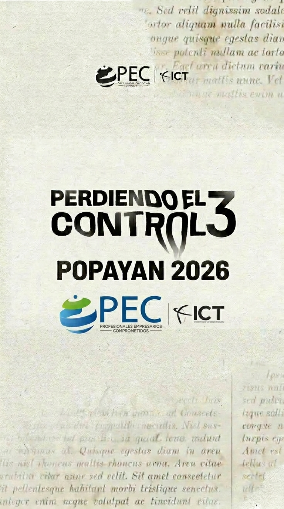
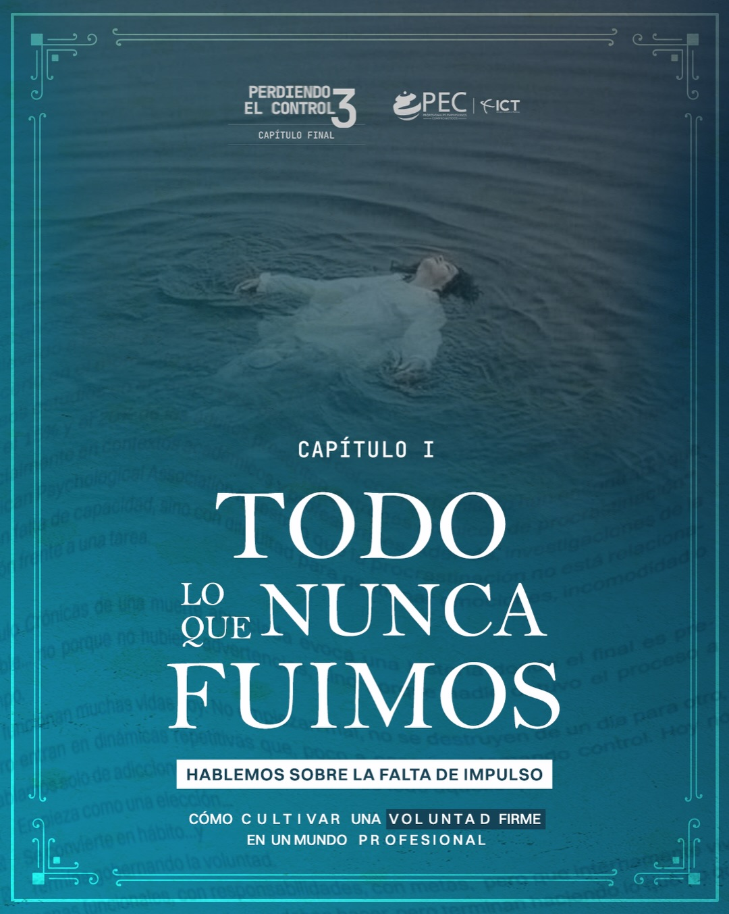
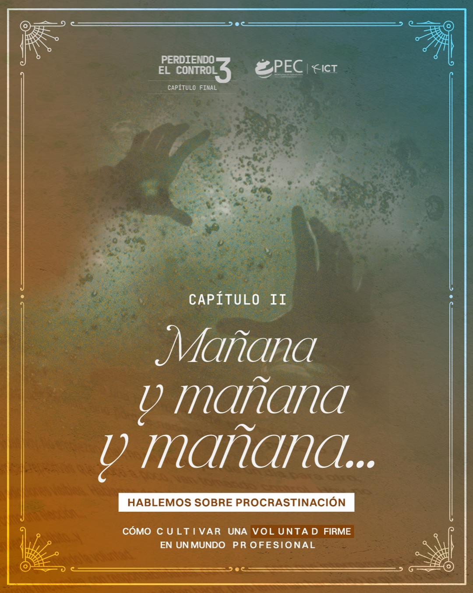
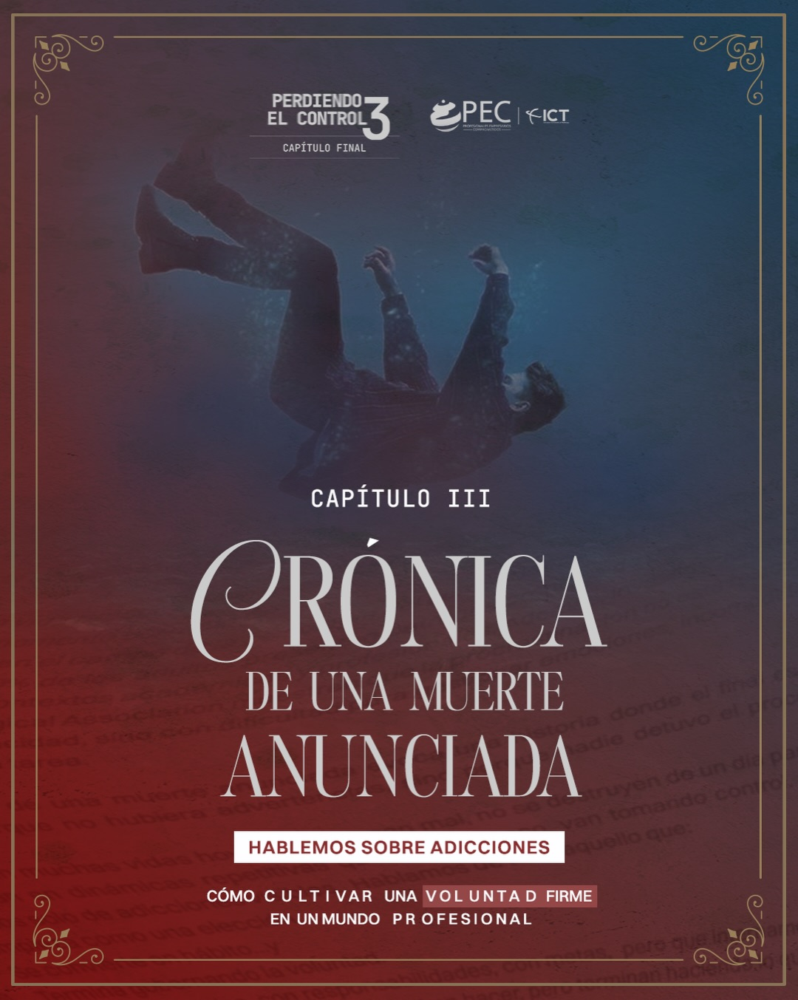
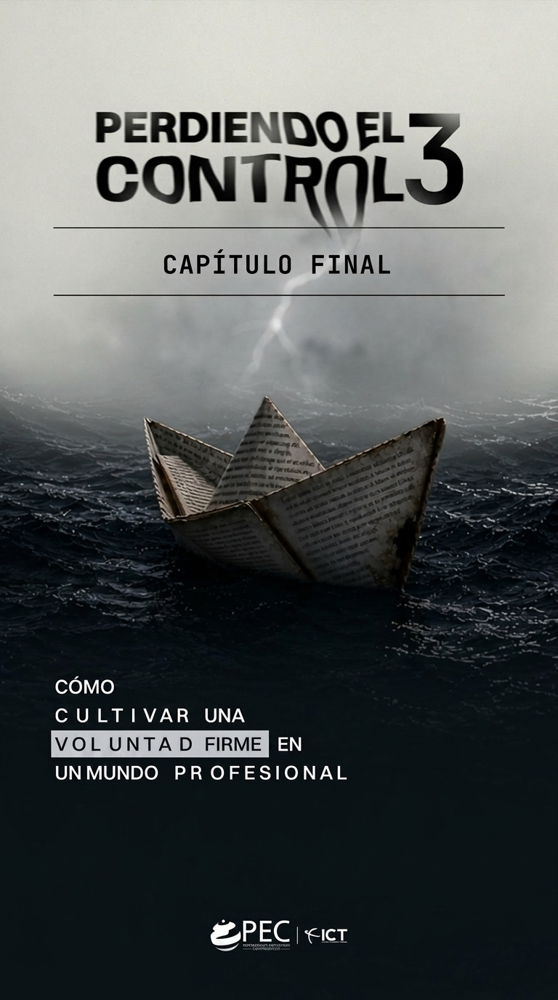

"No todo el que avanza tiene dirección.
No todo el que produce está en control."

Vivimos ocupados, conectados, produciendo, respondiendo mensajes, cumpliendo metas y tomando decisiones. Pero muchas veces, mientras todo parece avanzar por fuera, por dentro algo se está apagando.
Este proceso no es una invitación a hacer más.
Es una invitación a recuperar el control interior.
"No es que no quiera, es que no tengo fuerza interior."
No todo cansancio se quita durmiendo; a veces es el alma la que necesita recuperar su dirección. No es que no quieras, es que te falta energía. Ven y da el primer paso hacia tu restauración.
Un espacio para reconocer el desánimo, el bloqueo interior y la pérdida de impulso que impiden avanzar, aunque exista claridad sobre lo que se debe hacer.


"La voluntad debilitada por la evasión."
Una confrontación directa con el hábito de postergar lo esencial, llenar la agenda de urgencias y dejar para después las decisiones que pueden cambiar el rumbo.
Estar siempre ocupado no significa avanzar; a veces la vida sigue corriendo mientras lo verdaderamente esencial se queda en pausa. No te faltan ganas ni capacidad, pero tu voluntad se debilitó esperando el 'momento perfecto'. Ven, deja el 'mañana' atrás y descubre cómo pasar de la intención a la acción hoy.
"Mi deseo es más fuerte que mi decisión."
¿Cuántas veces te has dicho 'esta es la última vez' y descubres que tu deseo sigue siendo más fuerte que tu decisión? Funcionar bien por fuera no siempre significa ser libre por dentro. Ven y descubre cómo recuperar el gobierno de tu vida cuando tus propias fuerzas ya no son suficientes.
Una mirada honesta a las dependencias visibles e invisibles: redes, trabajo excesivo, validación, placer, distracciones, hábitos y conductas que terminan tomando el control.


"Recupera el timón de tu vida interior."
El cierre del proceso: volver al centro correcto, ordenar prioridades y permitir que Dios restaure la dirección, la estabilidad y el propósito.
¿Cumples con todo, logras tus metas y mantienes tu vida a flote, pero por dentro sientes que navegas a la deriva? Producir sin paz agota el alma. Ven y descubre cómo recuperar el timón de tu vida para avanzar con verdadera firmeza y dirección.
¿Quién está tomando el timón de tu vida interior?
Sientes que has perdido impulso.
Te cuesta ejecutar lo que sabes que debes hacer.
Has postergado decisiones importantes.
Hay hábitos o deseos que te dominan.
Quieres fortalecer tu voluntad con Dios.
Deseas vivir tu profesión, empresa o liderazgo con dirección.
No te acostumbres a vivir en pausa, dejando lo importante para mañana o navegando por inercia mientras algo más controla tus decisiones. Si tu vida avanza por fuera pero por dentro sientes que te falta impulso, libertad o dirección, este evento es para ti. Tu voluntad no puede seguir esperando;
¡ven y descubre cómo recuperar el timón de tu vida!
Una voluntad firme no nace solo de la disciplina externa. Se fortalece cuando el corazón vuelve al lugar correcto y Dios ocupa el centro de las decisiones.
Fechas:
Hora: 7:00 PM
Sedes:
Informes: 301 368 0420 - 321 323 1896
Redes Sociales: @mundo_pec
Elige tu sede y haz clic en el botón correspondiente para completar tu registro oficial en nuestro formulario seguro.